objetos
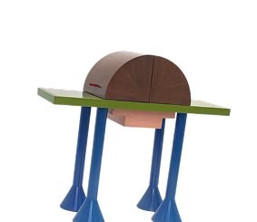
Bar Ferroprusiato
Minibar de 1982. Énfasis en el juego de geometrías y la combinación de materiales. Es caprichista porque no busca solo resolver una función utilitaria, sino convertir un minibar en un objeto expresivo, lúdico y visualmente provocador, dándole una silueta casi animal.
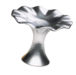
Ceniceros
Objeto de cerámica de 1968 transformado en pieza escultórica inspirada en flores. Es caprichista porque rompe los límites entre lo artístico y lo funcional, convirtiendo objetos de uso diario en obras expresivas, lúdicas y pop, priorizando el color y la forma.
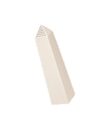
Salero obelisco
Pieza de cerámica de 1968. Es caprichista porque toma un ícono urbano monumental porteño y lo reduce a un objeto doméstico, jugando con la contradicción, el humor y cuestionando los límites entre arte, consumo y vida cotidiana.
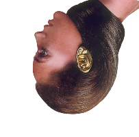
Accesorio oreja
Objeto de 1966 concebido como oro fundido. Es caprichista porque no es joyería funcional, sino una ficción creada para circular en los medios de moda como crítica al consumismo y al fetichismo, desafiando por completo la utilidad del diseño.

Radio in bag
Proyecto conceptual de 1981. Es caprichista porque deconstruye un electrodoméstico masivo, exhibiendo sus componentes electrónicos en una funda de PVC transparente y blanda, cuestionando deliberadamente la estética del diseño industrial tradicional.

Vestido floral
Pieza de vestuario de 1991. Es caprichista por su lenguaje expresivo, lúdico y alternativo, utilizando la "pobreza chic" mediante la reutilización de flores, materiales desechados y telas económicas para cuestionar la alta costura en performances underground.

Silla Twist
Silla de 2011 diseñada por Ricardo Blanco. Es caprichista porque logra una gran síntesis formal con un simple caño de acero curvo, fusionando la economía de medios de producción con un lenguaje sumamente expresivo y minimalista.
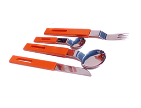
Cubiertos Orfeo
Línea de uso cotidiano de 1960. Es caprichista por el fuerte contraste visual entre el acero inoxidable pulido y sus llamativos mangos plásticos de colores, introduciendo una estética lúdica y moderna en la mesa tradicional argentina.
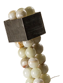
Atalaya
Lámpara de Cristián Mohaded (2022). Es caprichista porque transforma la piedra (ónix) en luz. La repetición de esferas y la geometría de su bloque superior le dan un aura escultórica, priorizando el impacto visual y la artesanía contemporánea.
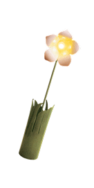
Flor lámpara
Diseño de Edgardo Giménez (1965). Es caprichista por priorizar absolutamente lo simbólico sobre lo funcional: convierte literalmente a la lámpara en una flor gigante, acercando el objeto utilitario al arte pop con humor y fantasía visual.

Circus stool
Banco plegable de Alejandro Sarmiento (1992). Es caprichista porque transforma un material industrial y ultra humilde como el cartón fibra en un asiento sólido y llamativo, valiéndose únicamente de un sistema lúdico de pliegues y remaches.

Silla hueso
Creada por Fernando Poggio en los años 2000. Es caprichista por su forma orgánica en una sola pieza de fundición de aluminio brillante. Su silueta fluida se impone en el espacio más como una escultura de alto impacto que como un asiento tradicional.
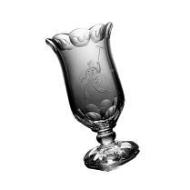
Copón Rigolleau
Pieza de 1954 tallada en cristal por Lucrecia Moyano. Es caprichista por la ornamentación extrema de su materialidad: el vidrio soplado presenta grabados complejos que elevan un objeto utilitario a la categoría de pieza de autor.
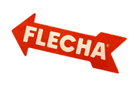
Logo Flecha
Isologotipo creado en 1962. Es caprichista porque su altísima pregnancia gráfica, bidireccionalidad y contraste cromático lo convirtieron no solo en una marca comercial de zapatillas, sino en un verdadero símbolo de la cultura pop masiva argentina.
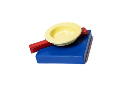
Cenicero
Variante de cerámica de la pieza de Giménez (1968). Mantiene el mismo espíritu transformando un simple receptáculo de cenizas en una colorida forma ondulada que decora el ambiente, desdibujando la línea entre el arte y la manufactura cotidiana.
evento
Una intervención espacial y lúdica en el corazón de la ciudad. Este evento caprichista toma el Obelisco porteño como epicentro para desplegar instalaciones a gran escala de nuestros objetos icónicos. Un recorrido inmersivo donde el diseño sale a la calle para provocar, interactuar y transformar el paisaje urbano en un manifiesto visual.
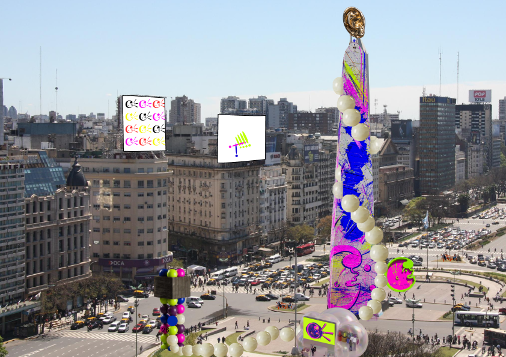
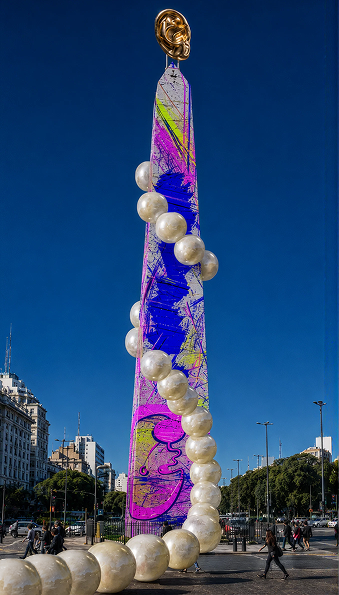
El icónico Obelisco intervenido con texturas y colores vibrantes, marcando el epicentro del caprichismo monumental en la ciudad.
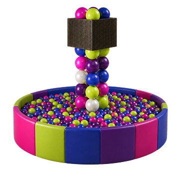
Pelotero interactivo. Una estructura lúdica que invita al público a sumergirse físicamente en la experiencia cromática del evento.
Pabellón inmersivo, tótems digitales interactivos y soportes esculturales que permiten a los usuarios dejar su huella en la exhibición.
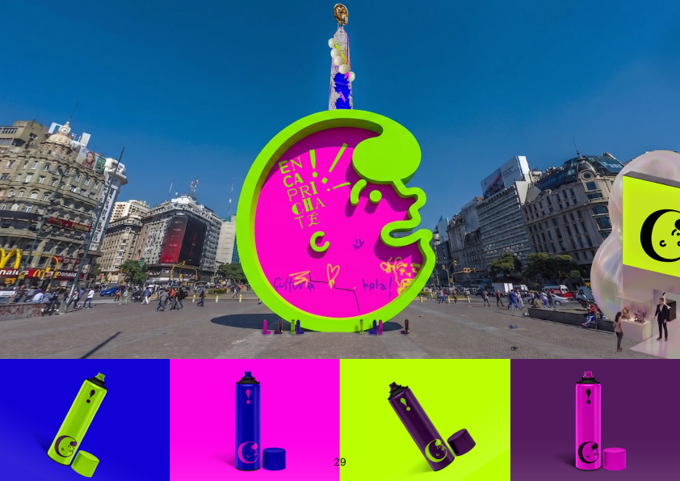
Proyección nocturna. Al caer el sol, las mega-pantallas y el Obelisco iluminan la plaza, cambiando drásticamente la atmósfera.
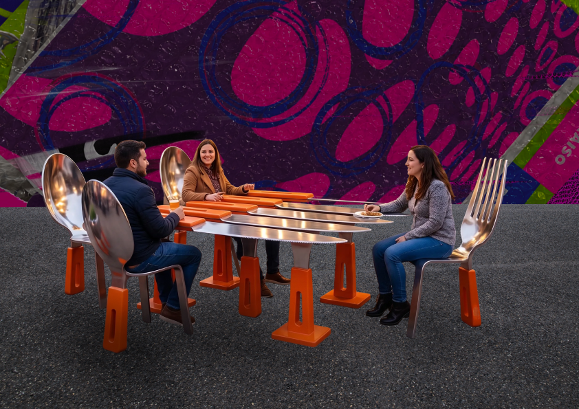
Stand de los Cubiertos Orfeo a gran escala. Una reinterpretación monumental del diseño cotidiano convertido en punto de encuentro.
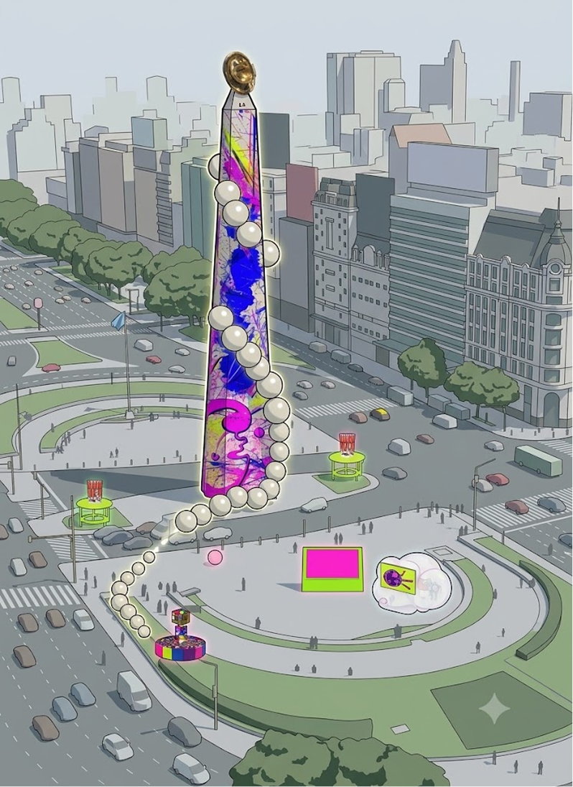
Mapa del circuito. Una vista panorámica con la distribución de todas las instalaciones alrededor de la Plaza de la República, guiando el recorrido de los caprichistas.
contacto
Instagram
@caprichismo
Mail
hola@caprichismo.com
Substack
@caprichismo
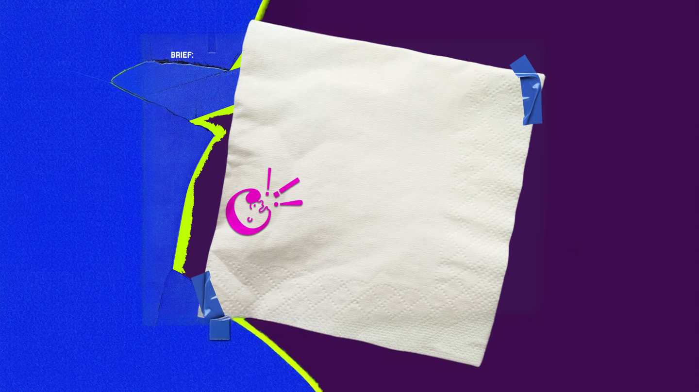
caprichismo
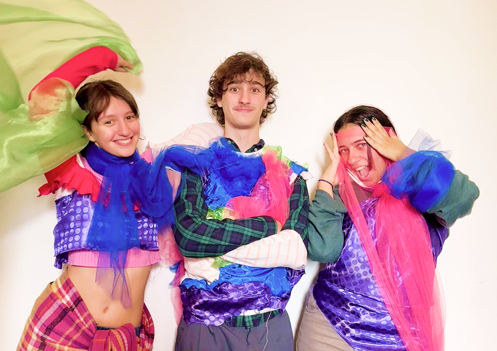